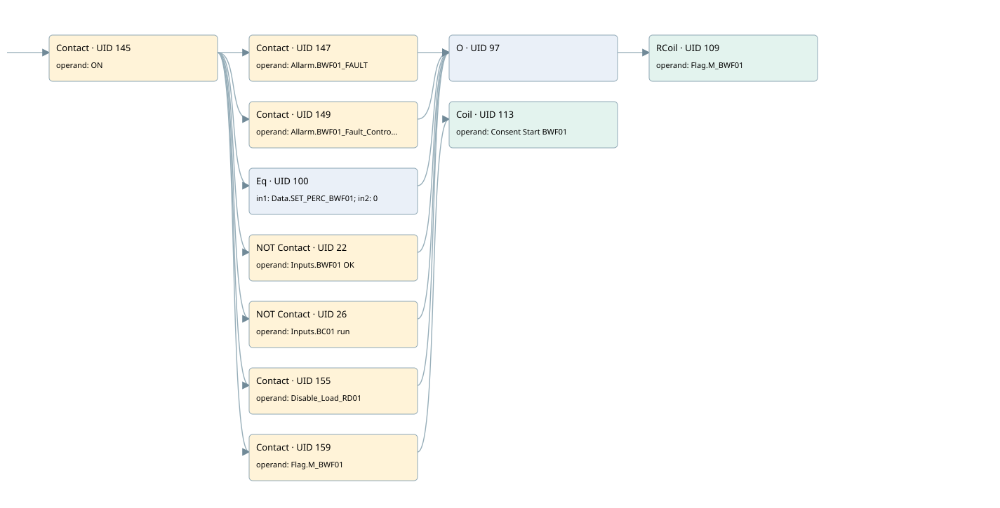

bwf01
motors 1 · 검색 색인 순서 3 · 원본 내부 NID 추정 3
백업 PLF 원본의 2778651 바이트 위치에서 복원한 XML. 검색 문서 1932의 객체 키 161022008011000000000000와 연결했다. 이름 해석 11/11개. 남은 RefId는 상수 또는 미해석 참조다.
연결 구조 다시 그리기
원본 Part/PCon/Wire를 이용한 연결도다. TIA 화면의 래더 배치 또는 실행 결과를 재현한 그림은 아니다. 핀 연결은 아래 표와 원본 XML을 기준으로 읽는다. 노드 위에 마우스를 두면 피연산자 이름을 볼 수 있다.

접점·코일·블록과 피연산자
| Part UID | Gate | Negated 핀 | 연결 피연산자 |
|---|---|---|---|
| 145 | Contact | operand = ON | |
| 147 | Contact | operand = Allarm.BWF01_FAULT | |
| 149 | Contact | operand = Allarm.BWF01_Fault_Control | |
| 100 | Eq | in1 = Data.SET_PERC_BWF01; in2 = 0 | |
| 22 | Contact | operand | operand = Inputs.BWF01 OK |
| 26 | Contact | operand | operand = Inputs.BC01 run |
| 155 | Contact | operand = Disable_Load_RD01 | |
| 97 | O | ||
| 109 | RCoil | operand = Flag.M_BWF01 | |
| 159 | Contact | operand = Flag.M_BWF01 | |
| 113 | Coil | operand = Consent Start BWF01 |
접점 경로를 펼친 조건식
Contact·O/A·비교기의 원본 연결을 읽기 쉽게 펼친 보조 해석이다. POWER는 전원 레일 시작을 뜻한다. 호출 블록·에지·타이머의 내부 동작과 다중 쓰기 순서는 이 표로 실행 검증하지 않았다. 미해석 핀과 RefId는 원문 연결표에서 확인한다.
| UID | 동작 | 대상 | 원본 접점 경로 | 내용 |
|---|---|---|---|---|
| 109 | RCoil | Flag.M_BWF01 | ((ON AND Allarm.BWF01_FAULT) OR (ON AND Allarm.BWF01_Fault_Control) OR (ON AND [Data.SET_PERC_BWF01 = 0]) OR (ON AND NOT [Inputs.BWF01 OK]) OR (ON AND NOT [Inputs.BC01 run]) OR (ON AND Disable_Load_RD01)) | 조건 성립 시 Reset |
| 113 | Coil | Consent Start BWF01 | (ON AND Flag.M_BWF01) | 조건에 따른 Coil 기록 |
원본 배선 연결
| Wire UID | 동일 Wire 연결 끝점 |
|---|---|
| 161 | Powerrail {} ↔ Part 145.in |
| 126 | ORef 114 (ON) ↔ Part 145.operand |
| 146 | Part 145.out ↔ Part 147.in ↔ Part 149.in ↔ Part 100.pre ↔ Part 22.in ↔ Part 26.in ↔ Part 155.in ↔ Part 159.in |
| 127 | ORef 115 (Allarm.BWF01_FAULT) ↔ Part 147.operand |
| 148 | Part 147.out ↔ Part 97.in1 |
| 128 | ORef 116 (Allarm.BWF01_Fault_Control) ↔ Part 149.operand |
| 150 | Part 149.out ↔ Part 97.in2 |
| 129 | ORef 117 (Data.SET_PERC_BWF01) ↔ Part 100.in1 |
| 130 | ORef 118 (0) ↔ Part 100.in2 |
| 131 | Part 100.out ↔ Part 97.in3 |
| 21 | ORef 23 (Inputs.BWF01 OK) ↔ Part 22.operand |
| 30 | Part 22.out ↔ Part 97.in4 |
| 25 | ORef 27 (Inputs.BC01 run) ↔ Part 26.operand |
| 28 | Part 26.out ↔ Part 97.in5 |
| 134 | ORef 121 (Disable_Load_RD01) ↔ Part 155.operand |
| 156 | Part 155.out ↔ Part 97.in6 |
| 138 | Part 97.out ↔ Part 109.in |
| 140 | ORef 123 (Flag.M_BWF01) ↔ Part 109.operand |
| 141 | ORef 124 (Flag.M_BWF01) ↔ Part 159.operand |
| 160 | Part 159.out ↔ Part 113.in |
| 143 | ORef 125 (Consent Start BWF01) ↔ Part 113.operand |
식별자 해석 근거 11개
| ORef UID | RefId | 이름 | IdentXmlPart 파일 | 해석 방법 |
|---|---|---|---|---|
| 114 | 1 | ON | 0602-IdentXmlPart.xml | UID/RID + search-text + NID agreement |
| 115 | 18 | Allarm.BWF01_FAULT | 0604-IdentXmlPart.xml | UID/RID + search-text + NID agreement |
| 116 | 19 | Allarm.BWF01_Fault_Control | 0604-IdentXmlPart.xml | UID/RID + search-text + NID agreement |
| 117 | 21 | Data.SET_PERC_BWF01 | 0604-IdentXmlPart.xml | UID/RID + search-text + NID agreement |
| 118 | 22 | 0 | 0606-IdentXmlPart.xml | literal candidate: UID/RID/NID + nearby named declarations + search-text agreement |
| 23 | 230 | Inputs.BWF01 OK | 0604-IdentXmlPart.xml | UID/RID + search-text + NID agreement |
| 27 | 231 | Inputs.BC01 run | 0604-IdentXmlPart.xml | UID/RID + search-text + NID agreement |
| 121 | 16 | Disable_Load_RD01 | 0605-IdentXmlPart.xml | UID/RID + search-text + NID agreement |
| 123 | 25 | Flag.M_BWF01 | 0604-IdentXmlPart.xml | UID/RID + search-text + NID agreement |
| 124 | 25 | Flag.M_BWF01 | 0604-IdentXmlPart.xml | UID/RID + search-text + NID agreement |
| 125 | 26 | Consent Start BWF01 | 0602-IdentXmlPart.xml | UID/RID + search-text + NID agreement |
검색 코드 보조 자료
참조 명칭을 찾기 위한 자료이며 실행 순서나 AND/OR 관계는 위 연결표로 확인한다.
"on" "allarm".bwf01_fault "flag".m_bwf01 "allarm".bwf01_fault_control "data".set_perc_bwf01 0 "inputs"."bwf01 ok" "inputs"."bc01 run" #disable_load_rd01 "flag".m_bwf01 "consent start bwf01"